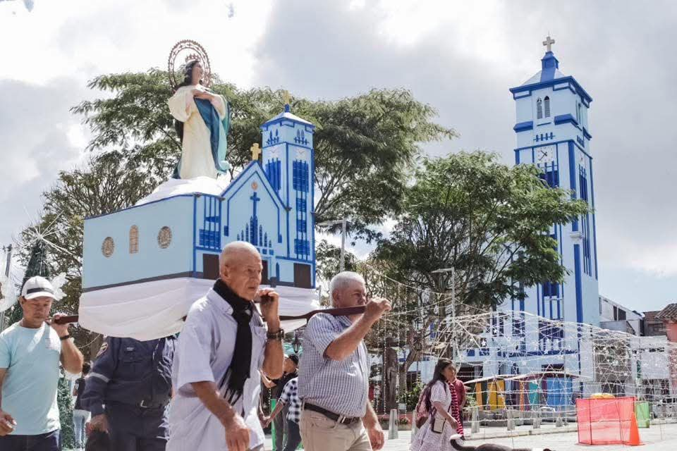

Parroquia La Inmaculada Concepción
Parroquia La Inmaculada Concepción
Parroquia La Inmaculada Concepción
Parroquia La Inmaculada Concepción
Versalles, Valle del Cauca

La Inmaculada Concepción
Cartago, Valle del Cauca
Carrera 8 # 6-53
Pbro. Orlando de Jesus Toro V
315 352 9123

Uno de los detalles más destacados e impresionantes e impresionantes de la parroquia es que alberga el vitral más grande de Latinoamérica.